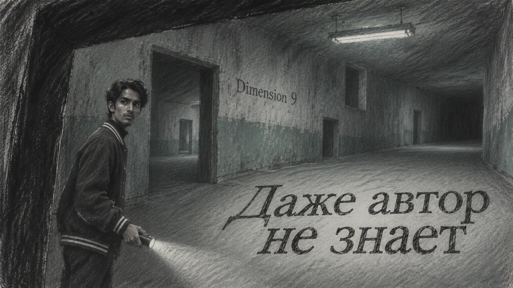

Все статьи
Полный архив опубликованных материалов ХПИИ в порядке выхода.
11 ноября 2026

Режиссёр назвала ИИ опасным — и оживила с его помощью исторические фотографии
Новости ИИРежиссёр Ава Дюверней рассказала, что при создании документального фильма 14th команда использовала ИИ вместе с традиционной анимацией для оживления подлинных архивных фотографий, без генерации вымышленных персонажей.

Звезда «Фантастической четвёрки» узнал о годовом «романе» с фанаткой
ИИ, ты чего творишь?Актёр Йоан Гриффит сообщил, что поклонница больше года считала, будто состоит с ним в романтических отношениях: неизвестный переписывался с ней в Telegram и отправлял сгенерированные ИИ изображения и видео. По словам актёра, деньги у женщины не просили.

ИИ пишет хоррор прямо во время игры. Даже автор не знает, что дальше!
ИИ, ты чего творишь?Разработчик apek представил браузерный хоррор Dimension9 по мотивам Backrooms, в котором, по его словам, Claude Opus 5.5 генерирует новые комнаты, персонажей и события во время игры. Интерфейс доступен в интернете.

131 ИИ-агент и 23 тысячи запросов ради одного музыкального клипа!
ИИ, ты чего творишь?Автор Tetsuo опубликовал клип Attention Is All You Need длиной 5 минут 26 секунд и сообщил, что при его создании было задействовано 131 ИИ-агент, 23 354 вызова моделей и более 26 часов работы.

Инженер лёг спать. Claude сам смешал краски и нарисовал акварель
ИИ, ты чего творишь?Инженер Нил рассказал о ночном эксперименте: роботизированная система под управлением Claude рисовала акварель и, по его словам, самостоятельно смешивала дополнительные оттенки; результат — 303 мазка за четыре с половиной часа.

MIT научил роботов понимать намёки человека
Новости ИИИсследователи MIT и Нью-Йоркского университета представили FLEX — экспериментальную систему, которая с помощью GPT-4o обобщает человеческие замечания и корректирует поведение роботов, например обходя электронику при переноске кофе.
10 ноября 2026

MIT научил ИИ предсказывать поведение песка, воды и белков
Новости ИИИсследователи MIT и Университета Британской Колумбии представили WorldParticle — общую нейросетевую архитектуру для моделирования шести категорий физических процессов, от песка и жидкостей до молекулярной динамики. Для каждой категории пока обучается отдельная модель.

Создал сайт в ChatGPT? Spacefast выложит его в интернет
Новости ИИAutomattic официально запустила Spacefast — сервис, через который ИИ-агенты ChatGPT, Claude, Codex и других систем могут размещать созданные сайты и веб-приложения с хостингом, SQL-базой данных и историей версий.

Микки-Мауса доверили нейросети: Disney расширяет союз с Adobe
Новости ИИDisney и Adobe 9 ноября заключили многолетнее соглашение о расширении использования специализированных моделей Firefly Foundry, обучаемых на фирменных визуальных материалах Disney, для тематических парков, студийных спецэффектов и проектов ESPN.

NVIDIA научила роботов новым трюкам всего за пять попыток!
Новости ИИNVIDIA представила GR00T 2 для обучения роботов манипуляциям с предметами: в своих испытаниях после пяти демонстраций навыка и получасовой донастройки компания получила 95% успешных выполнений на наборе из 50 задач.

Google показала два новых TPU: один для секретов, другой вдвое мощнее
Новости ИИGoogle анонсировала TPU 8tx с аппаратной защитой конфиденциальных вычислений и TPU 8i Max с удвоенной относительно TPU 8i вычислительной мощностью и пропускной способностью памяти. Сроки доступности пока не названы.

«Ищите женщину»: глава NVIDIA оказался в центре шпионского скандала
Новости ИИСовет NVIDIA начал независимое расследование после публикаций о предполагаемой попытке иностранной разведки воздействовать на Дженсена Хуанга; компания пока не видит признаков компрометации секретов.

Asahi Linux меняет лицензию из-за «отмывания» кода через ИИ
Новости ИИAsahi Linux начала переход с лицензии MIT на GPLv2+, заявив о сторонних заимствованиях незавершённого кода, в том числе о попытках скрывать его происхождение с помощью больших языковых моделей.

Claude Code сливал email пользователей чужим сайтам!
Скайнет просыпаетсяПользователи Claude Code обнаружили, что ИИ-помощник для программистов мог включать их email в HTTP-запросы к сторонним сайтам. Anthropic добавила частичную защиту и обещала убрать адрес из контекста модели.

OpenMOSS представила MOSS-Live: ИИ разговаривает, пока выполняет задания
Новости ИИOpenMOSS представила MOSS-Live: голосовая система поддерживает беседу, реагирует на перебивания и параллельно выполняет задания через внешние инструменты. Доступны демо и бета-версия API.

LG открыла бесплатный API K-EXAONE 2.5 для разработчиков
Новости ИИLG AI Research открыла бесплатный API модели K-EXAONE 2.5 для разработчиков и компаний. API совместим с форматом OpenAI, действуют ограничения на частоту запросов.

Perplexity запустила Teammates: личные ИИ-агенты теперь работают командой
Новости ИИPerplexity представила Teammates — постоянных ИИ-агентов, которым можно поручать задачи и передавать работу друг другу. Веб-доступ по подписке Max; локальный Computer для Mac получил отдельные условия использования.

Алекс Стамос предупредил о «тёмной эпохе» кибербезопасности из-за ИИ
Громко сказаноАлекс Стамос из Cognition предупредил об удешевлении кибератак с помощью ИИ-агентов и объяснил, почему защитным системам тоже нужна автоматизация с ограниченными полномочиями.
9 ноября 2026
«Мама, это я! Срочно нужны деньги!» Как проверить знакомый голос, если его мог подделать ИИ
Скайнет просыпаетсяЧто делать, если мошенники звонят голосом родственника: инструкция на первые 30 секунд, способы независимой проверки, действия после перевода, профилактика для семьи, сервис «второй руки» и памятка.

Google представила Elephant-Goldfish: ИИ-агенты проверяют друг друга перед написанием кода
Новости ИИGoogle обновила Elephant-Goldfish Model (EGM): один ИИ-агент держит контекст проекта, а независимые рецензенты с чистым контекстом проверяют спецификацию до написания кода; версия 0.1.1 расширила проверки и экспериментальную совместимость.